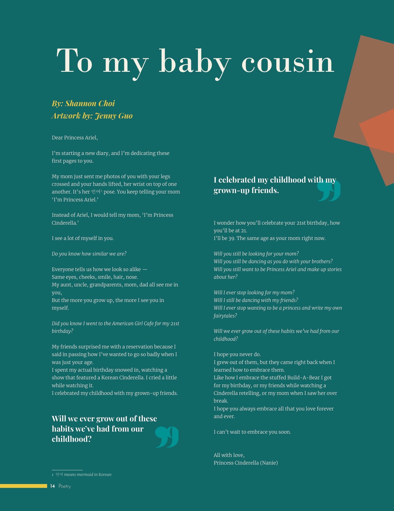
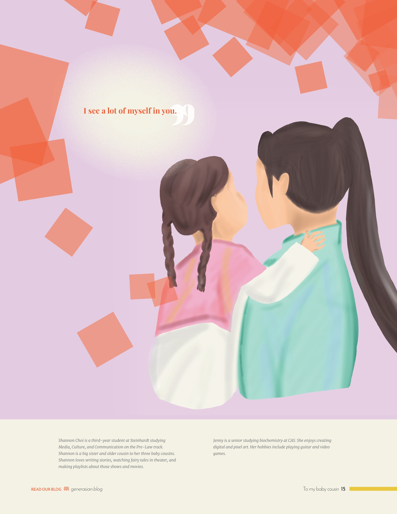

Generasian Magazine Layout


I designed this spread for NYU's Generasian magazine, featuring poetry and artwork from other members of the magazine. I used the magazine's color scheme and the background color of the artwork to design this spread, choosing the font Bodoni MT and a dark blue background to complement the tone of the poem. Although I initially opted for a more minimalist feel for the right page, it lacked visual interest, prompting me to add the transparent red squares, which was inspired by the bokeh effect from photography and the organic shapes of foliage. I also made the choice to move the pull quote "I see a lot of myself in you" away from the text and next to the artwork, as it adds more of the poem's context to the artwork. Overall, I believe I succeeded in designing a spread that matches the clean but colorful aesthetic of the rest of the magazine in a way that catches readers' attention and guides them through the poem.
Made with Adobe InDesign.